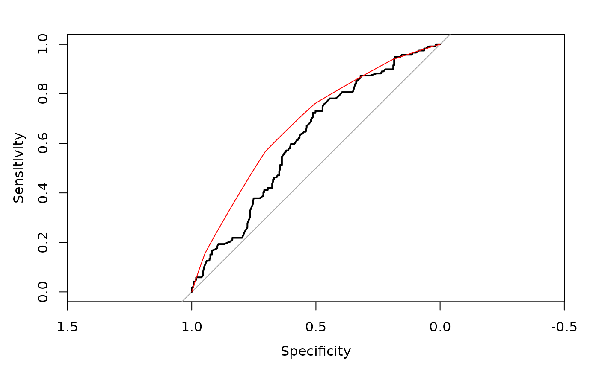

This document provides background information and step-wise tutorial for using the predtools R package for the model-based ROC (mROC) methodology.
Imagine you have developed a risk prediction model using some development dataset. The risk prediction model takes in some predictors (e.g., sex, age, previous disease history) and returns the risk of an event (e.g., risk of disease relapse in the next 12 months). You would like to evaluate the performance of the risk model in a new (external) validation sample. Among other things, you typically evaluate the Receiver Operating Characteristic (ROC) curve of the risk prediciton model in the new sample.
Now, model-based ROC (mROC) curve is the ROC curve that should be observed if the prediction model is calibrated in the external population. Comparing the empirical ROC and mROC curves in the new sample can be informative on if the model is calibrated in the new sample.
You can install the development version from GitHub with:
# install.packages("devtools")
devtools::install_github("resplab/predtools")The package provides simple functions for mROC-related methods. It also comes with exemplary datasets. Below we provide a step-by-step illustration
Imagine the variable y indicates risk of disease recurrence in a unit of time. We have a prediction model that quantifies this risk given a patient’s age, disease severity level, sex, and whether the patient has comorbidity.
The package comes with two exemplary datasets. dev_data and val_data. We use the dev_data as the development sample and the val_data as the external validation sample.
dev_data has 500 rows. val_data has 400 rows.
Here are the first few rows of dev_data:
| age | severity | sex | comorbidity | y |
|---|---|---|---|---|
| 55 | 0 | 0 | 1 | 1 |
| 52 | 1 | 0 | 0 | 0 |
| 63 | 0 | 0 | 1 | 0 |
| 61 | 1 | 1 | 1 | 1 |
| 58 | 0 | 1 | 0 | 0 |
| 54 | 1 | 0 | 0 | 1 |
| 45 | 0 | 0 | 0 | 0 |
We use the development data to fit a logistic regression model as our risk prediction model:
reg<-glm(y~sex+age+severity+comorbidity,data=dev_data,family=binomial(link="logit"))
summary(reg)
#>
#> Call:
#> glm(formula = y ~ sex + age + severity + comorbidity, family = binomial(link = "logit"),
#> data = dev_data)
#>
#> Deviance Residuals:
#> Min 1Q Median 3Q Max
#> -1.2904 -0.8272 -0.6373 1.1570 2.1050
#>
#> Coefficients:
#> Estimate Std. Error z value Pr(>|z|)
#> (Intercept) -1.728929 0.565066 -3.060 0.00222 **
#> sex 0.557178 0.223631 2.492 0.01272 *
#> age 0.005175 0.010654 0.486 0.62717
#> severity -0.557335 0.227587 -2.449 0.01433 *
#> comorbidity 1.091936 0.209944 5.201 1.98e-07 ***
#> ---
#> Signif. codes: 0 '***' 0.001 '**' 0.01 '*' 0.05 '.' 0.1 ' ' 1
#>
#> (Dispersion parameter for binomial family taken to be 1)
#>
#> Null deviance: 602.15 on 499 degrees of freedom
#> Residual deviance: 560.41 on 495 degrees of freedom
#> AIC: 570.41
#>
#> Number of Fisher Scoring iterations: 4Given this, our risk prediction model can be written as:
\(\bf{ logit(p)=-1.7289+0.5572*sex+0.0052*age-0.5573*severity+1.0919*comorbidity}\).
First, let’s compare the ROC and mROC in the development data
pred<-predict.glm(reg, type='response')
library(pROC)
#> Type 'citation("pROC")' for a citation.
#>
#> Attaching package: 'pROC'
#> The following objects are masked from 'package:stats':
#>
#> cov, smooth, var
dev_roc<-roc(response=dev_data[,'y'], predictor=pred)
#> Setting levels: control = 0, case = 1
#> Setting direction: controls < cases
plot(dev_roc)
title("ROC in the development dataset")And now the much-awaited mROC using these data. Note that we use the line function to add the mROC on top
dev_mroc<-mROC(p=pred)Now lets calculate the predicted probabilities for each subject in the validation dataset given the prediction equation.
pred<-predict.glm(reg,newdata = val_data, type="response")
summary(pred)
#> Min. 1st Qu. Median Mean 3rd Qu. Max.
#> 0.1008 0.1853 0.2794 0.2891 0.4053 0.5714Using the package pROC, let’s draw the validation ROC curve
val_roc<-roc(response=val_data[,'y'], predictor=pred)
#> Setting levels: control = 0, case = 1
#> Setting direction: controls < cases
plot(val_roc)And now the much-awaited mROC using these data. Note that we use the line function to add the mROC on top
val_mroc<-mROC(p=pred)Notice that the mROC function only requires the vector of predicted probabilities.
To compare the ROC and mROC plots, we juxtapose them next to each other:

Here, it is obvious that the mROC and ROC curve are not compatible, indicating that the model is not calibrated.
res<-mROC_inference(val_data[,'y'],pred)
res
#> Mean calibration statistic (A):0.00835868(Obs>Pred) (p:0.72352)
#> mROC/ROC equality statsitic (B):0.05910898 (p:0.0479)
#> Unified statistic:6.727852 (df:3.99516,p:0.1505959)